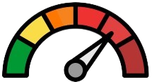

 Gráficas de Contaminantes
Gráficas Meteorológicas
Mapa de Beijing
Selecciona una fecha:
Visor por Hora de Contaminantes
Visor por Hora de Meteorologia
Parámetros para comparar contaminantes
PM2.5
PM10
SO2
NO2
CO
O3
Seleccione Estación 1:
Seleccione Estación 2:
Día Específico
Rango de Fechas
Correlacion de contaminantes por dia
Análisis de la Evolución Espacial
Todos los datos
Por día
Por mes
Enero
Febrero
Marzo
Abril
Mayo
Junio
Julio
Agosto
Septiembre
Octubre
Noviembre
Diciembre
 Análisis de la Evolución Espacial
Análisis de la Evolución Espacial